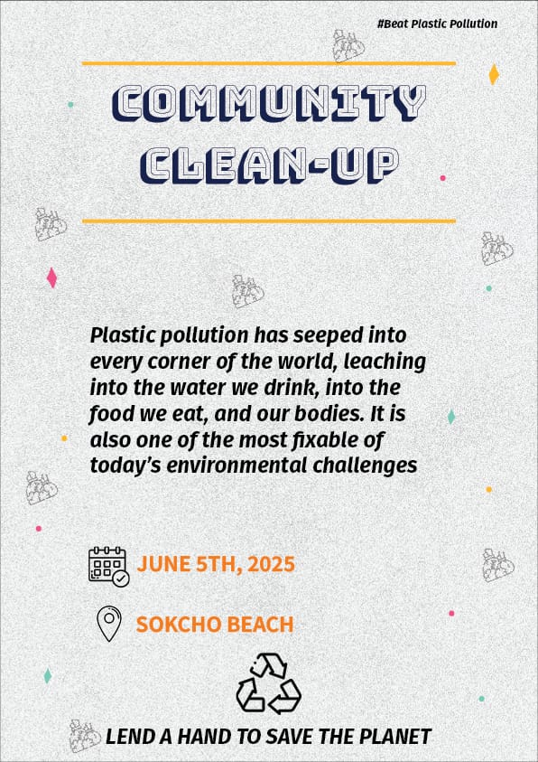
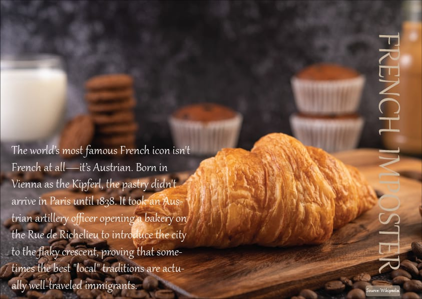
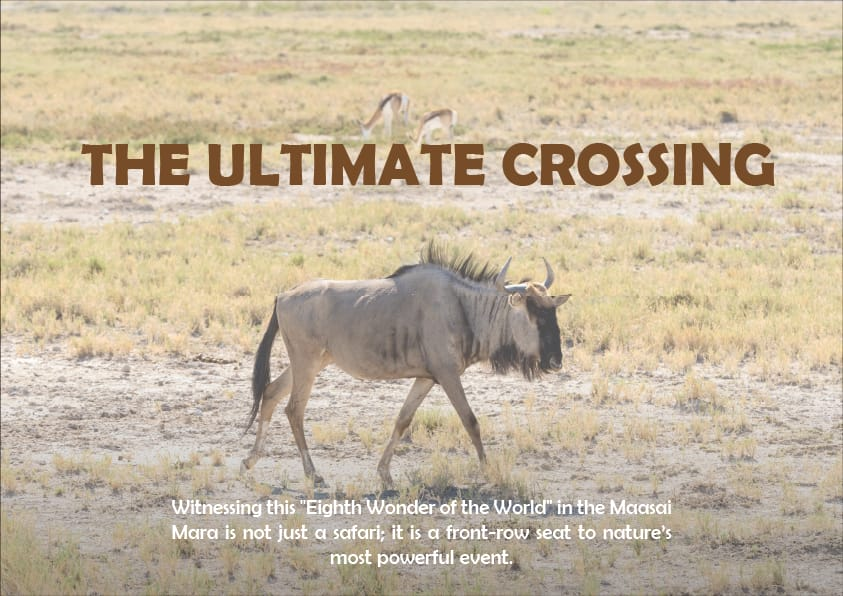
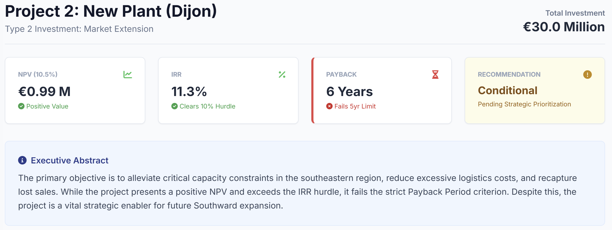

Web Developer. Designer. Business Analyst.
Hello! I'm a passionate developer from Kenya, currently studying for a Bachelor's degree in Business Administration in South Korea. I have experience in creating web applications and doing design work. I love building things that live on the internet and solving complex problems with simple, elegant solutions.
I use several Adobe applications such as Photoshop, Illustrator, and others to create beautiful, polished designs for businesses. On the side, I also help my father with his design workshop, where I work on business flyers, marketing infographics, and election posters.

A clean, modern poster designed to raise awareness about plastic pollution and promote a community clean-up event.
View Design
A magazine-style visual design narrating the surprising origin of the croissant. Warm photography meets refined typography.
View Design
A nature-themed poster capturing the Maasai Mara wildlife migration. Minimal composition with emotional impact.
View Design